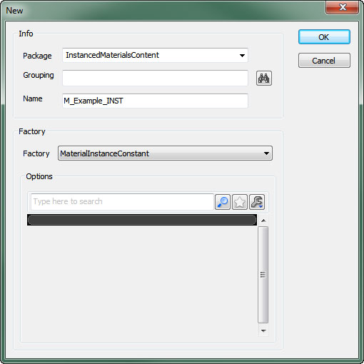
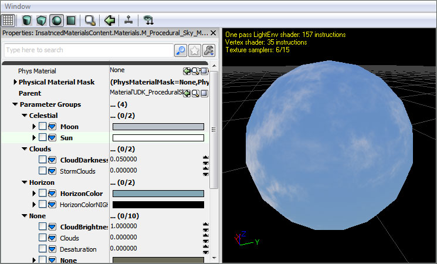

인스턴싱된 머티리얼
문서 변경내역: Scott Sherman 작성. 홍성진 번역.
개요
언리얼 엔진 3에서는 머티리얼의 외형을 바꾸는 데 있어 머티리얼을 리컴파일하는 것과 같은 비싼 방법을 쓸 필요 없이, 머티리얼 인스턴싱을 사용해도 됩니다. 머티리얼의 전반적인 변경은 리컴파일 없이 불가능하기에, 인스턴스는 미리정의된 머티리얼 파라미터 값을 변경하는 것으로 제한됩니다. 파라미터는 고유한 이름, 유형, 기본값을 가지고 컴파일된 머티리얼에 정적으로 정의된 것입니다. 머티리얼의 인스턴스는 아주 적은 비용으로 이 파라미터에 대한 값을 동적으로 새로이 할 수 있습니다.
프리미티브에 인스턴싱되지 않은 머티리얼 적용을 허용하기 위해서는, 추상 베이스 클래스 MaterialInterface 가 사용됩니다. 이 클래스는 적용된 머티리얼의 표현식과 파라미터 값 둘 다로의 인터페이스입니다. Material 클래스는 표현식과 기본 파라미터 값을 정의하는 MaterialInterface 의 서브클래스입니다. Material Instance Constant 와 Material Instances Time Varying 클래스는 하나의 부모 MaterialInstance 를 가진 MaterialInterface 의 서브클래스입니다. 이 두 가지 종류의 표현식 모두 그 부모로부터 표현식과 파라미터 값을 물려받으며, 선택적으로 일부 파라미터 값을 덮어쓰거나 움직일 수 있습니다.
Material Instance Constant 는 명시적으로 정의된 파라미터 값을 갖는 머티리얼 인스턴스인 반면, Material Instances Time Varying 은 분포(distribution) 곡선을 통해 시간에 따라 변하는 파라미터 값을 갖는 머티리얼 인스턴스 입니다.
그 후 머티리얼 인스턴스는 머티리얼 인스턴스 에디터를 사용하여 편집할 수 있습니다. 자세한 정보는 Material Instance Editor User Guide KR (머티리얼 인스턴스 에디터 사용 안내서) 페이지를 확인하시기 바랍니다.
에디터에서 머티리얼 인스턴싱하기
에디터에서 머티리얼의 인스턴스를 만드는 방법은 크게 두 가지 있습니다.
콘텐츠 브라우저 에서 새 애셋 버튼을 누르고 새 대화창에서 팩토리 옵션을 MaterialInstanceConstant (또는 필요한 인스턴스에 따라 MaterialInstanceTimeVarying) 으로 설정합니다.

그런 다음 새로운 머티리얼 인스턴스의 Parent 프로퍼티에 인스턴싱할 머티리얼을 할당합니다.
 인스턴싱하려는 머티리얼에 우클릭한 다음 새 머티리얼 인스턴스 (불변) (또는 필요한 인스턴스 종류에 따라 새 머티리얼 인스턴스 (시간 가변) ) 을 클릭합니다.
인스턴싱하려는 머티리얼에 우클릭한 다음 새 머티리얼 인스턴스 (불변) (또는 필요한 인스턴스 종류에 따라 새 머티리얼 인스턴스 (시간 가변) ) 을 클릭합니다.

파라미터 그룹
Parameter 표현식에는 머티리얼 인스턴스 에디터에서 정리해서 볼 수 있는 Group 프로퍼티가 있습니다. 관련된 파라미터를 같은 그룹에 추가시키면 부모 머티리얼의 특정한 면이나 이펙트를 제어하는 모든 파라미터를 찾아 수정할 수 있습니다. 그룹에 속하지 않는 파라미터는 디폴트로 None 그룹에 속해 표시될 것입니다.

파라미터화된 머티리얼 만들기
머티리얼에 파라미터를 추가하려면, 머티리얼 에디터에 파라미터 표현식 종류 중 하나를 사용합니다. ScalarParameter, VectorParameter, 다양한 텍스처 파라미터, 스태틱 파라미터 등을 포함해서 사용할 수 있는 파라미터 종류는 여러가지 됩니다.
파라미터에 고유명을 짓고 그룹 에 할당한 다음, 디폴트 값을 줍니다.

스칼라 파라미터
ScalarParameter 는 하나의 부동소수점 값을 포함하는 파라미터입니다. 스페큘러 파워, 리니어 인터폴레이션의 알파, 오패시티 등과 같은 단일 값을 기반으로 이펙트를 돌리는 데 사용할 수 있습니다.
모든 표현식 목록과 그 설명에 대해서는 Materials Compendium KR (머티리얼 개론) 페이지를 참고하시기 바랍니다.
벡터 파라미터
VectorParameter 는 4 채널 벡터 값 또는 4 개의 부동소수점 값을 갖는 파라미터입니다. 보통 환경설정 가능한 색을 내는 데 사용되나, 위치 데이터를 나타내거나 값이 여럿 필요한 이펙트를 돌리는 데도 사용할 수 있습니다.
모든 표현식 목록과 그 설명은 Materials Compendium KR (머티리얼 개론) 페이지를 참고하시기 바랍니다.
텍스처 파라미터
사용가능한 텍스처 파라미터는 여럿 있습니다. 각각은 수용되는 텍스처의 종류나 사용되는 방식이 정해져 있습니다. 생성되는 셰이더 코드가 텍스처 종류에 따라 달라지기 때문에, 각각의 특정 텍스처 타입마다 별도의 표현식이 필요합니다.
- TextureSampleParameter2D 는 기본 Texture2D 를 받습니다.
- TextureSampleParameterCube 는 TextureCube 나 큐브맵을 받습니다.
- TextureSampleParameterFlipbook 은 FlipbookTexture 를 받습니다.
- TextureSampleParameterMeshSubUV 는 메시 이미터와 함께 Sub-UV 이펙트에 사용되는 Texture2D 를 받습니다.
- TextureSampleParameterMeshSubUV 는 메시 이미터와 함께 Sub-UV 블렌딩 이펙트에 사용되는 Texture2D 를 받습니다.
- TextureSampleParameterMovie 는 MovieTexture (bink 무비)를 받습니다.
- TextureSampleParameterNormal 은 노멀맵으로 사용되는 Texture2D 를 받습니다.
- TextureSampleParameterSubUV 는 스프라이트 이미터와 함께 Sub-UV 이펙트에 사용되는 Texture2D 를 받습니다.
모든 표현식 목록과 그 설명에 대해서는 Materials Compendium KR (머티리얼 개론) 페이지를 참고해 주시기 바랍니다.
스태틱 파라미터
스태틱 파라미터는 컴파일 시간에 적용되어, 스태틱 파라미터에 의해 마스킹 되버리는 머티리얼의 전체 분기가 완전히 컴파일되어 실행시간에 실행되지 않을 것이기에 코드를 좀 더 최적화시킬 수 있습니다. 컴파일 시간에 적용되기에 머티리얼 인스턴스 에디터 에서만 변경할 수 있으며, 스크립트에서는 불가능합니다.
경고: 인스턴스에 의해 사용되는 베이스 머티리얼 내 정적 파라미터가 결합될 때마다 새로운 머티리얼이 컴파일되게 됩니다!
이를 통해 컴파일되는 쉐이더의 양이 지나치게 많아질 수 있습니다. 머티리얼에 정적 파라미터의 수와, 실제로 사용되는 해당 정적 파라미터의 치환(permutation) 수의 최소화에 노력을 기울여야 합니다. 구체적인 정적 파라미터 유형에 대한 정보는 정적 스위치 파라미터 및 정적 콤포넌트 마스크 파라미터 를 참고하시기 바랍니다.
모든 표현식 목록과 그 설명은 Materials Compendium KR (머티리얼 개론) 페이지를 확인하시기 바랍니다.
스크립트에서 머티리얼 인스턴스하기
스크립트-제어 머티리얼 인스턴스를 만들려면, 언리얼스크립트에서 MaterialInstanceConstant 오브젝트를 새로 만드는 새 키워드를 사용하십시오. SetParent 함수를 사용하여 인스턴스의 표현식과 기본 파라미터값을 정의하는 머티리얼을 설정하고, SetScalarParameterValue 또는 SetVectorParameterValue 함수를 사용하여 해당 인스턴스에 대한 파라미터값을 변경합니다.
언리얼스크립트 제어 파라미터를 포함한 머티리얼 인스턴스 생성 및 적용법 데모 코드입니다:
var MeshComponent Mesh;
var MaterialInstanceConstant MatInst;
var float TanPercent;
function InitMaterialInstance()
{
MatInst = new(None) Class'MaterialInstanceConstant';
MatInst.SetParent(Mesh.GetMaterial(0));
Mesh.SetMaterial(0, MatInst);
UpdateMaterialInstance();
}
function UpdateMaterialInstance()
{
MatInst.SetScalarParameterValue('TanPercent',TanPercent);
}
function Timer()
{
if(/*character is outside*/)
TanPercent = Lerp(/*tanning rate*/,TanPercent,1.0);
UpdateMaterialInstance();
}